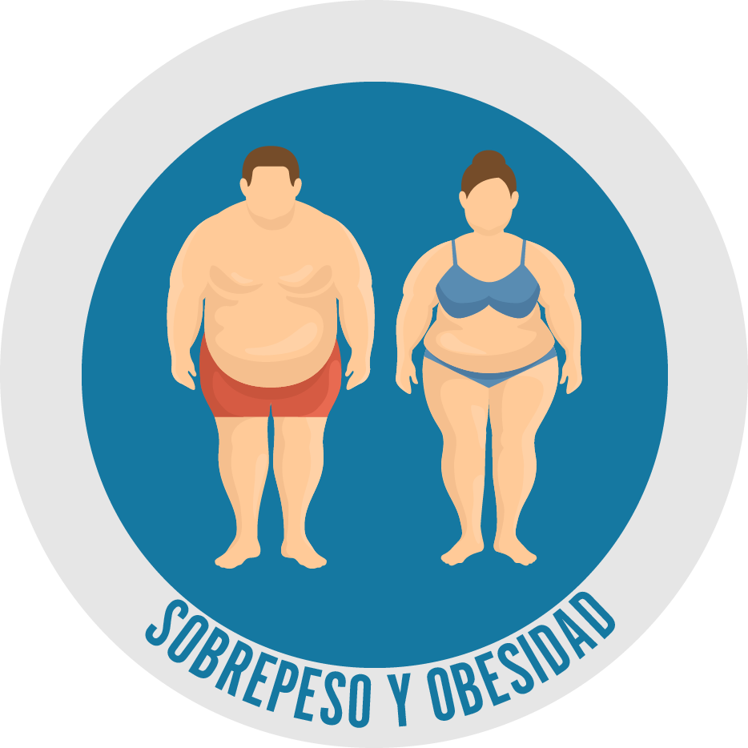
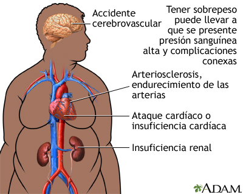

la obesidad se definen como una acumulación anormal o excesiva de grasa que puede ser perjudicial para la salud.
La causa fundamental del sobrepeso y la obesidad es un desequilibrio energético entre calorías consumidas y gastadas. A nivel mundial ha ocurrido lo siguiente:
A menudo los cambios en los hábitos alimentarios y de actividad física son consecuencia de cambios ambientales y sociales asociados al desarrollo y de la falta de políticas de apoyo en sectores como la salud; la agricultura; el transporte; la planificación urbana; el medio ambiente; el procesamiento, distribución y comercialización de alimentos, y la educación.
Un IMC elevado es un importante factor de riesgo de enfermedades no transmisibles, como las siguientes:
El riesgo de contraer estas enfermedades no transmisibles crece con el aumento del IMC. La obesidad infantil se asocia con una mayor probabilidad de obesidad, muerte prematura y discapacidad en la edad adulta. Sin embargo, además de estos mayores riesgos futuros, los niños obesos sufren dificultades respiratorias, mayor riesgo de fracturas e hipertensión, y presentan marcadores tempranos de enfermedades cardiovasculares, resistencia a la insulina y efectos psicológicos.
El sobrepeso y la obesidad, así como las enfermedades no transmisibles vinculadas, pueden prevenirse en su mayoría. Son fundamentales unos entornos y comunidades favorables que permitan influir en las elecciones de las personas, de modo que la opción más sencilla (la más accesible, disponible y asequible) sea la más saludable en materia de alimentos y actividad física periódica, y en consecuencia prevenir el sobrepeso y la obesidad.
La responsabilidad individual solo puede tener pleno efecto si las personas tienen acceso a un modo de vida sano. Por consiguiente, en el plano social, es importante ayudar a las personas a seguir las recomendaciones mencionadas, mediante la ejecución sostenida de políticas demográficas y basadas en pruebas sientíficas que permitan que la actividad física periódica y las opciones alimentarias más saludables estén disponibles y sean asequibles y fácilmente accesibles para todos, en particular para las personas más pobres. Un ejemplo de una política de ese tipo es un impuesto sobre las bebidas azucaradas.
La anorexia es una condición psicológica caracterizada por el deseo de mantener el peso corporal más bajo posible. Es un trastorno de salud mental asociado con bajo peso corporal, miedo a aumentar de peso, control sobre la dieta y el ejercicio. Las personas con anorexia otorgan gran importancia al control de su peso y estado físico, hasta el punto de interferir con la vida diaria. La anorexia afecta a niñas y mujeres con mayor frecuencia, aunque recientemente también se está volviendo más común entre niños y hombres. Esta condición aumenta el riesgo de mortalidad en aquellos que la padecen, debido a las complicaciones asociadas con la condición de suicidio, ingesta de laxantes y ayudas dietéticas y vómitos después de consumir alimentos. Algunas personas comen compulsivamente y luego expulsan lo que se consume (vómitos), de la misma manera que los que sufren de bulimia nerviosa.
El pronóstico de la anorexia depende de la rapidez con que se haya diagnosticado la patología y de la voluntad real de curación del paciente. Gracias a la asistencia del psicólogo, sin embargo, es posible resolver completamente la enfermedad con éxito. El tiempo variará de un caso a otro.
La causa de la anorexia es actualmente desconocida y es probable que sea una combinación de varios factores, incluidos factores biológicos, psicológicos y ambientales. La genética podría desempeñar un papel en el desarrollo de la anorexia, ya que hay una mayor probabilidad de que se desarrolle en personas que tienen antecedentes familiares positivos para la misma afección. Algunos rasgos genéticos, como el perfeccionismo y la sensibilidad, están asociados con la anorexia nerviosa. Los factores psicológicos también pueden contribuir a la anorexia. Algunas de las personas que desarrollan la afección muestran rasgos obsesivo-compulsivos que les facilitan seguir las rutinas y una dieta controlada. Algunas personas pueden tratar de controlar su ansiedad y otras afecciones psicológicas a través de la anorexia. Finalmente, las influencias ambientales también juegan un papel en el desarrollo de la anorexia. En particular, entre las mujeres, el éxito y la autoestima se equiparan con los estándares de belleza, como ser delgada.
Para una resolución positiva de la anorexia, a menudo es necesaria la participación de un equipo de expertos compuesto por psicólogos, psiquiatras, dietistas y pediatras.
si es asi cuentenos su problema y llene el formulario.